A Travel Portfolio
Shot on a Sony Cybershot, inherited from my mother. Every frame a small act of remembering where I come from — and figuring out where I belong.
I grew up as an embassy kid — one of those children who collects countries the way others collect stamps. Asia was home in ways I'm still learning to articulate, and the U.S. was a concept before it became a place I actually lived. Now I study at the University of Virginia, double majoring in Computer Science and Global Studies, trying to reconcile the two halves of a self that was always already split across continents.
These photographs are my attempt to see clearly — not as a tourist, not quite as a local, but through what sociologists call a "third culture lens." A perspective that belongs fully to neither world and so is free to notice both. Every place I visit, I am always simultaneously inside and outside of it, and that tension is where the most interesting pictures live.
All images were shot on my mother's Sony Cybershot. There is something right about that — using her camera to document my own becoming.
I drove to Boston with my best friend. Just the two of us and an open road — and when we finally got there, I pointed my camera up at the Paramount Theatre sign and tried to capture the feeling of a city that simply would not stop. Boston felt enormous to me. The neon, the noise, the scale of it pressed against a blue sky that seemed too small to contain it all. That photograph is less about a theatre and more about that specific feeling of arriving somewhere and realizing the world is bigger than you'd planned for.
Then came Acadia National Park — my favorite stop of the whole trip. We woke up at 4 AM and drove to Cadillac Mountain because we'd read it was the first place in the continental US to catch sunlight. We climbed in the dark, half asleep, talking about all the light we were about to see. What we got was fog. A thick, grey, beautiful fog that swallowed everything and gave nothing back. No sunrise. No blazing light on the Atlantic. Just a twilight abyss and the sound of waves somewhere below us.
I've thought about that morning a lot since. Beauty doesn't always arrive the way you invited it. Sometimes it shows up in the form of a foggy beach and a dead tree on the sand and a silence so total you can hear yourself breathing. That foggy cove is one of the best photographs I've ever taken.
We made it up at Niagara Falls — where we shared a rack of lamb ribs that cost more than anything I'd ever ordered in my life. Worth every cent. The falls were overwhelming in the best way possible. Mist everywhere. Tourist boats in red ponchos. The river churning turquoise. The kind of thing you can't fully believe even when you're standing in front of it.
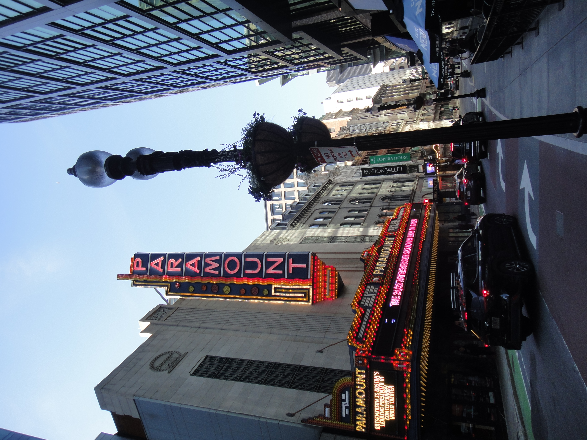
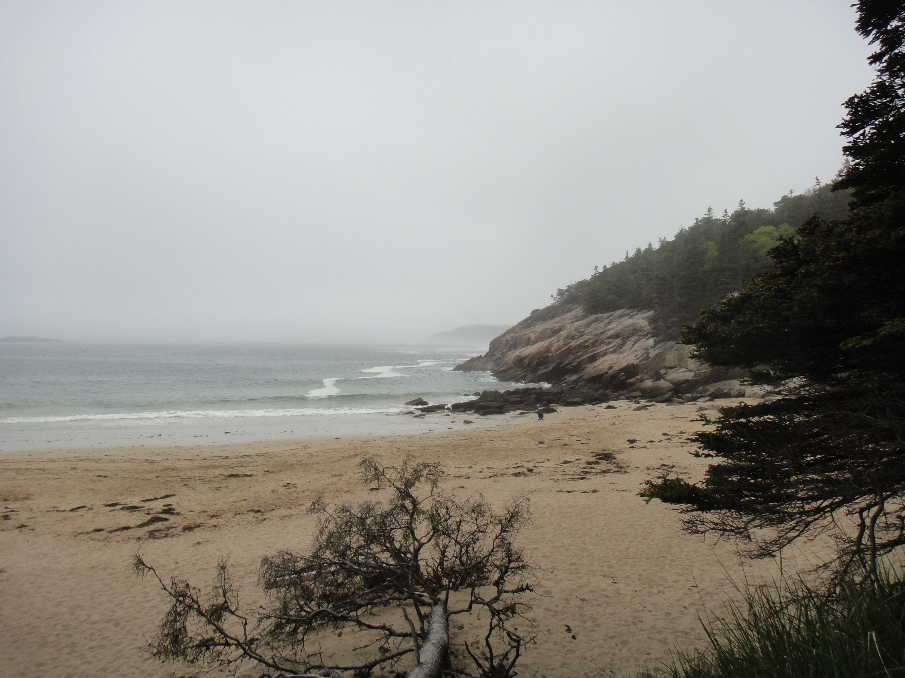
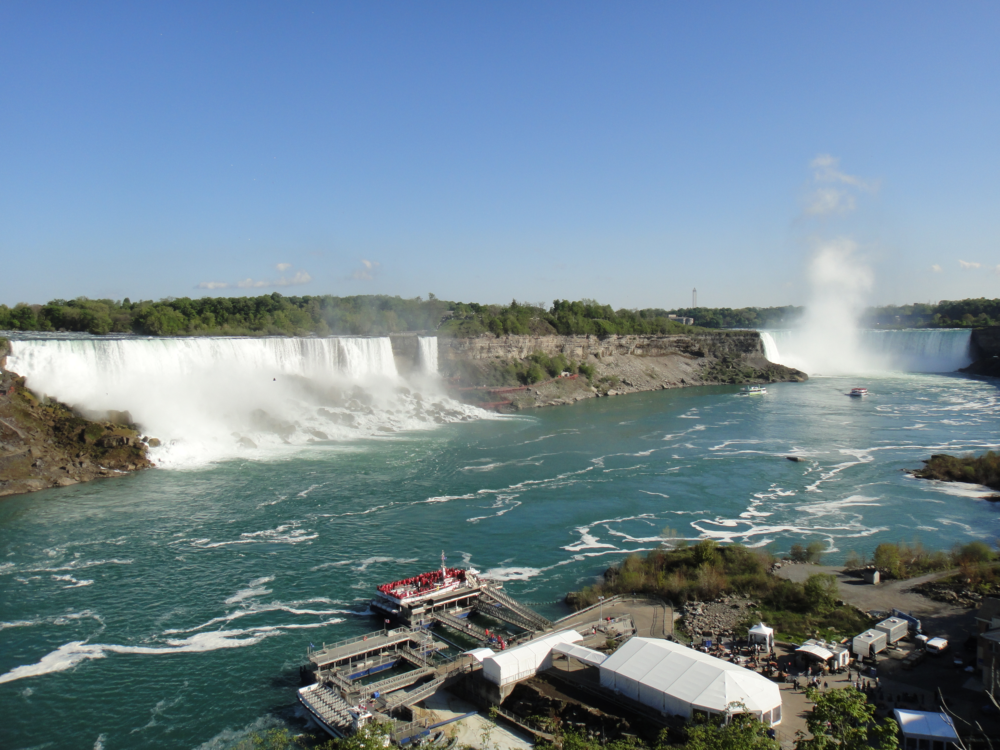
"Beauty doesn't always arrive the way you invited it — sometimes it's a fog so thick you can hear yourself breathing."Acadia National Park, Maine
I am half Japanese and half American, and Tokyo is the city I measure all other cities against. It is the place I know best and understand least. That is not a contradiction — it's a condition of the third culture experience. No matter how many times I return, no matter how fluent my Japanese gets, there is always another layer I haven't reached yet, another alley I've never turned down, another counter restaurant where the regulars know something I don't.
This photograph is a Tokyo ramen shop — the kind of place that exists in thousands of variations across the city, always small, always warm, always anchored by the hiss of a kitchen and the quiet ritual of strangers eating alone together. The calligraphy on the walls reads 辛つけめん (spicy dipping noodles) and ハイボール (highball). The man with his back to me is in his own world entirely. That's Tokyo. You can be completely alone in a room full of people, and somehow it doesn't feel lonely at all.
I don't know if Tokyo is home or the closest thing I have to one. But I know I keep going back, and I keep finding things I haven't seen before. That's enough.
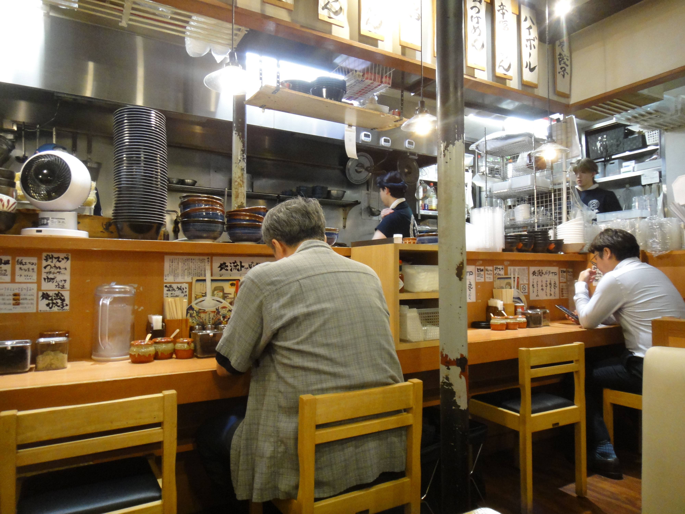
I signed up for a UVA Outdoors Club hike without knowing a single person who was going. I showed up to find five strangers — all men — who took me in without question and led me up the Cedar Run Trail in Shenandoah in the middle of autumn. It was the kind of risk that sounds small but isn't: showing up alone somewhere new and trusting that it will be okay.
It was more than okay. The trail follows a creek all the way up through forests that in October go gold and rust and deep red. The falls cascade over huge granite slabs in layers, and when we reached the base and I stood there with water sound filling every corner of the air, I felt something settle. The leaves were everywhere. The cold was real. The strangers had become, for that day, something like friends.
I take risks like this because the alternative — staying in what's comfortable — has never once shown me a waterfall.
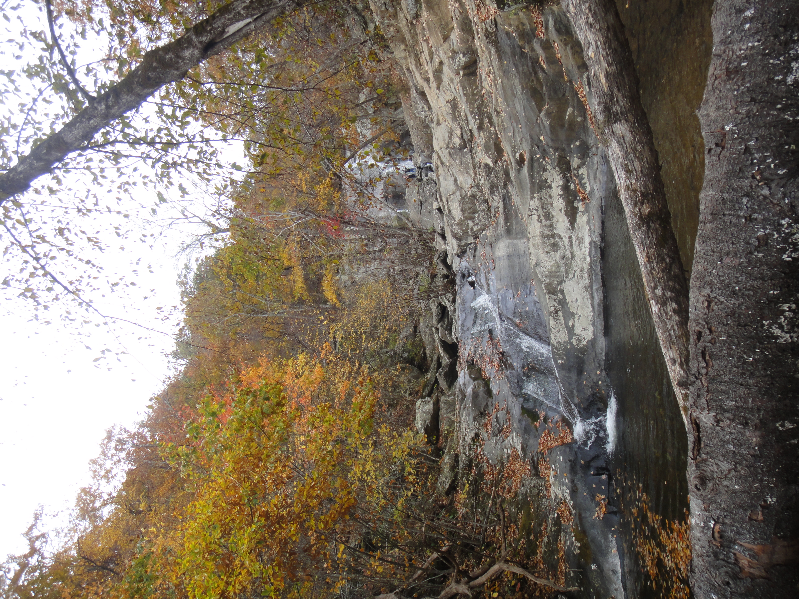
My Japanese grandmother does not live in Tokyo. She lives in the kind of place these photographs try to describe: mountain roads where trucks trundle past at unhurried speeds, rivers that wind through reed beds toward the sea, afternoons that go golden and stay that way longer than seems possible. Exploring the countryside with her is one of the ways we bridge the gap between us — between her Japan and my Japan, between her world and the blur of countries I was raised across.
We don't always share the same language perfectly. But we share the landscape. We share the specific quality of light on a river bend. We share standing on a pedestrian bridge together, watching the sun flatten against mountains, and not needing to say anything about it. These photographs are of that world — unhurried, deep-rooted, and more mine than anywhere I've ever been.
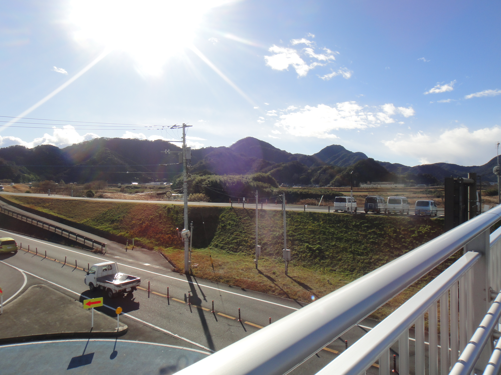
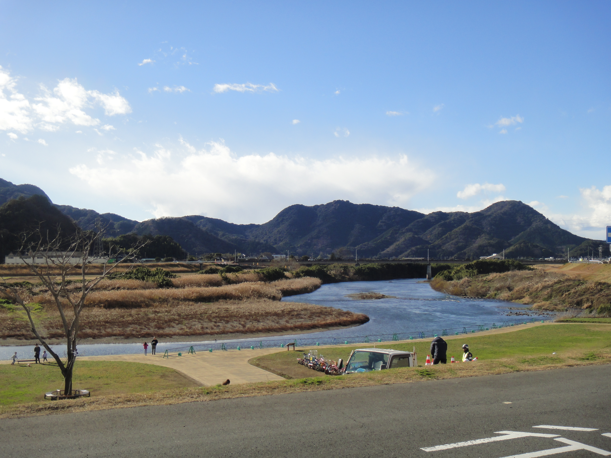
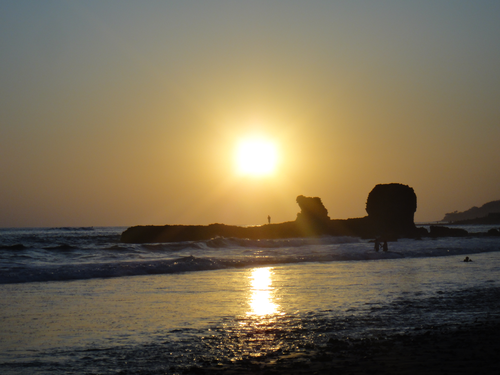
Spring break. El Salvador. Two best friends and a plan to surf. The Pacific coast there has a particular relationship with the sun — it seems to conspire with the water to produce light that has no parallel anywhere else I've been. These sunset photographs are two moments from the same evening, the same rock formation in silhouette, the same stretch of shoreline with its scattered stones. One shows the sun blazing gold, high and full. The other catches it slipping behind the rocks, the sky going all pink and mauve, a lone figure balanced on the formation as if at the edge of everything.
On my third time surfing ever, I had a coach. I felt good — genuinely competent, reading the waves, paddling at the right moments, standing up more than I fell. The ocean seemed manageable. Friendly, even. I was very wrong about that.
The next day, no coach. Just me and the Pacific and a board that had opinions of its own. I got completely obliterated. Waves broke directly on my head. I wiped out in every possible configuration. At one point I wasn't sure which direction was up. I looked, without question, ridiculous.
I paddled back out and tried again anyway. That's the thing about travel, and about me — I am always willing to look foolish in a new place. It's the only way I know how to actually be somewhere.
We also spent time in San Salvador — the cathedral, the public square where pigeons outnumber everyone, the colonial church with its intricate Gothic facade so detailed it looked like lace. A city that surprised me with its warmth and its monuments and its absolute refusal to be summarized.
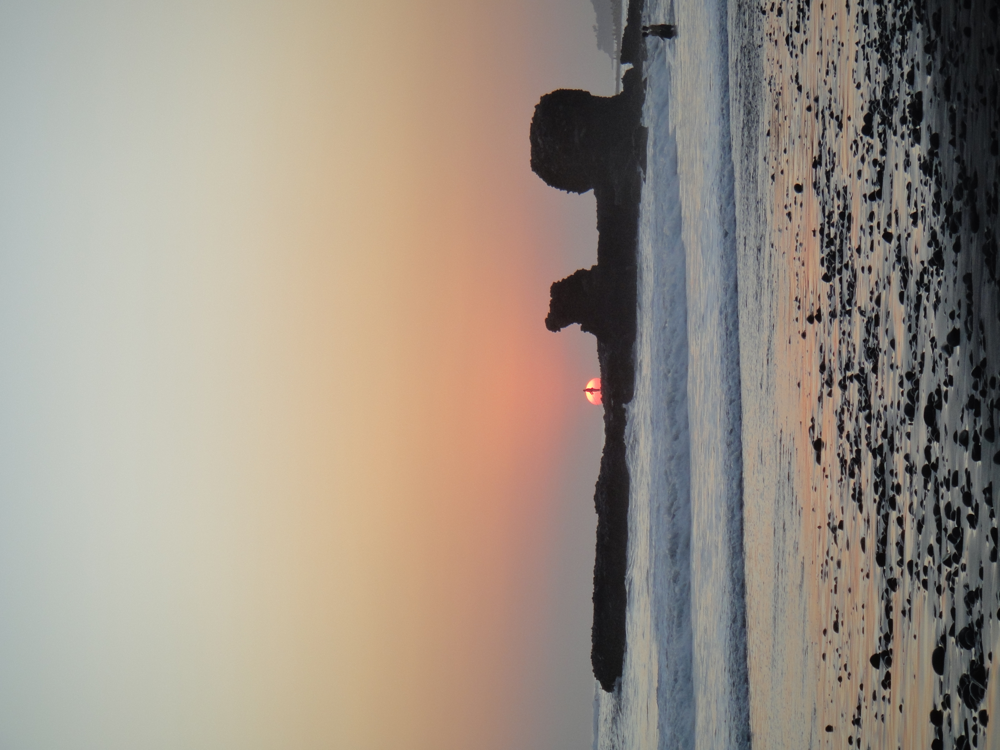
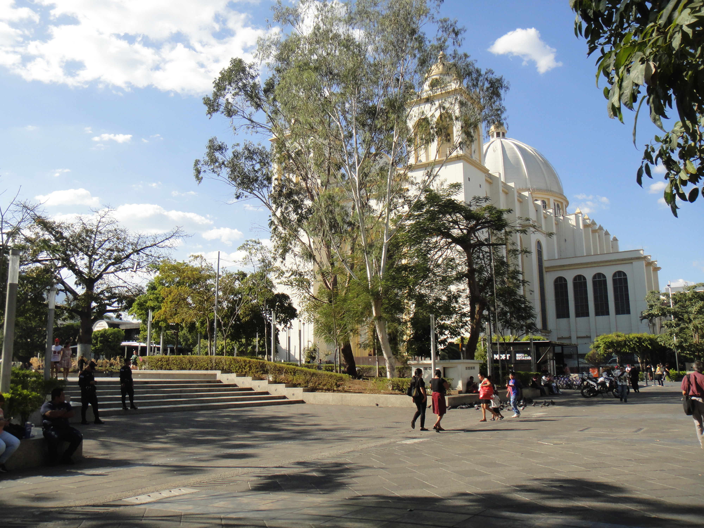
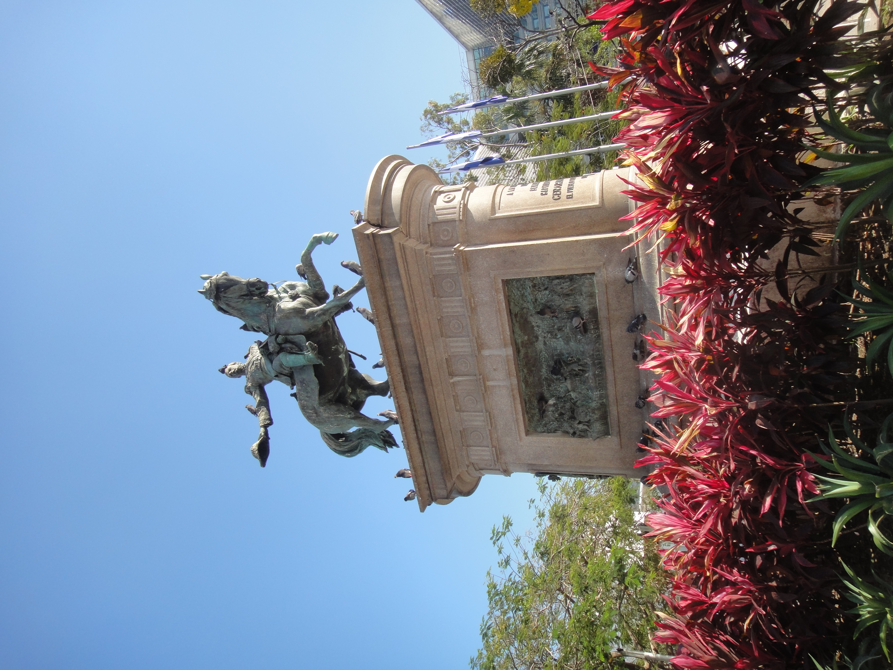
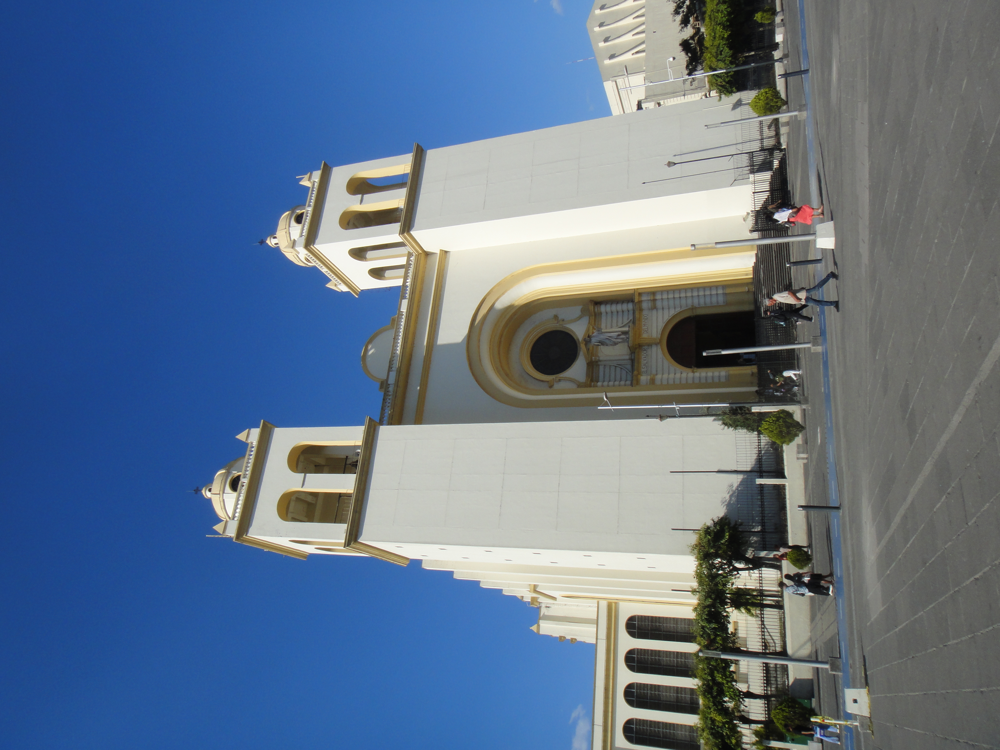
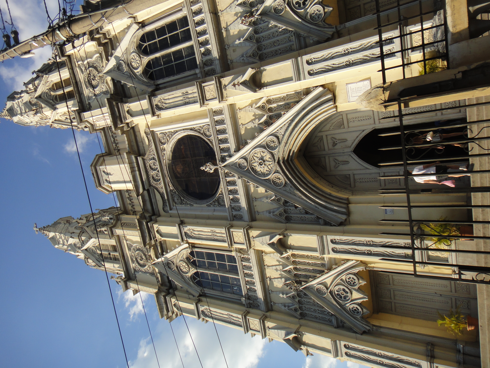
"I am always willing to look foolish in a new place. It's the only way I know how to actually be somewhere."Pacific Coast, El Salvador — third surfing lesson (no coach)